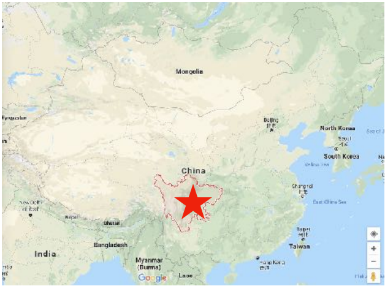

Sichuan Cuisine 川菜 Chuāncài

Sichuan Cuisine 川菜 Chuāncài —Spicy and bold, often mouth-numbing, using lots of chili, garlic, ginger and peanuts
Sichuan province is the birthplace of many dishes that are well-received globally. Sichuan food, originated from the Southwestern region of China, is the most widely served cuisine in China itself. The dishes of Sichuan cuisine are known for their deep and rich flavours, especially the taste of Sichuan pepper which is rare in other regional cuisines.